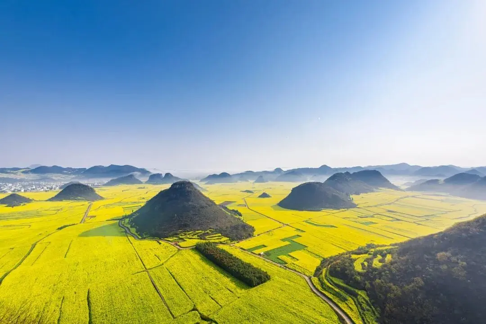
云南同样面对脆弱山地，治理方法并不只有一种
不同地区会根据岩溶石漠化、水土流失、干热河谷或高寒草地等生态条件选择不同组合。
川滇黔 11 地治理与利用路径
云南3 地
以干热河谷修复、特色农业和农文旅融合为主。
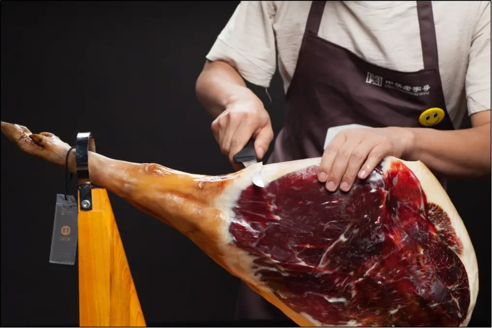
云南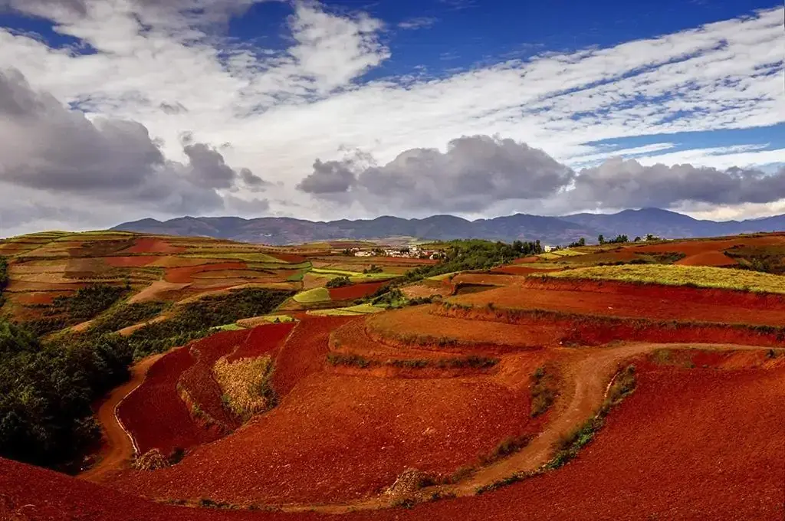
云南贵州3 地
以喀斯特生态保护、植被恢复和文旅产业转化为主。
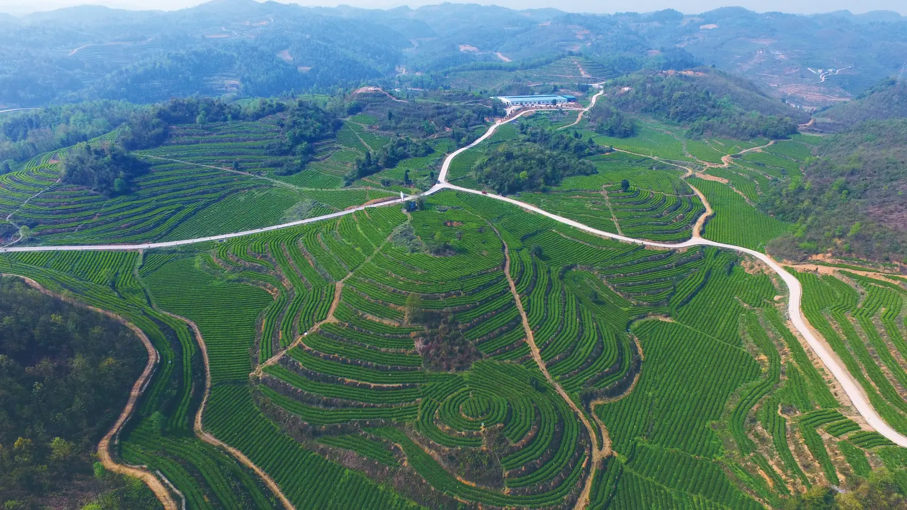
贵州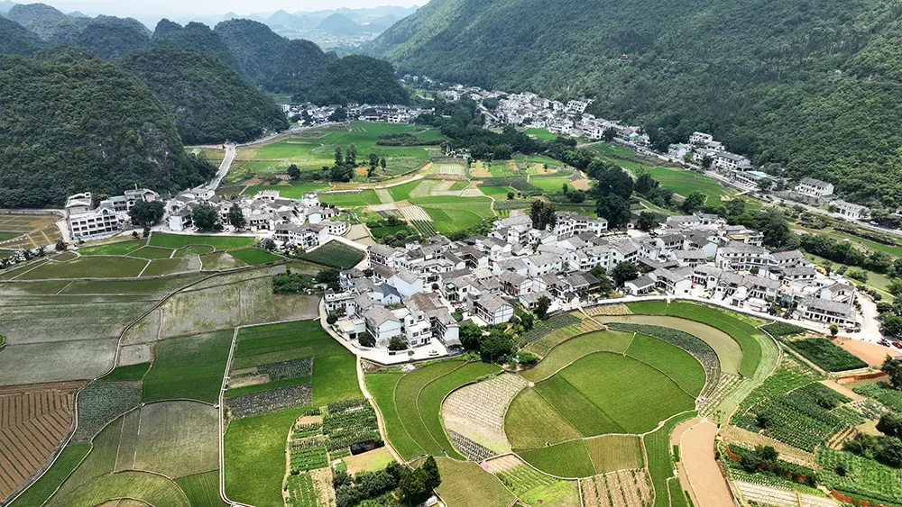
贵州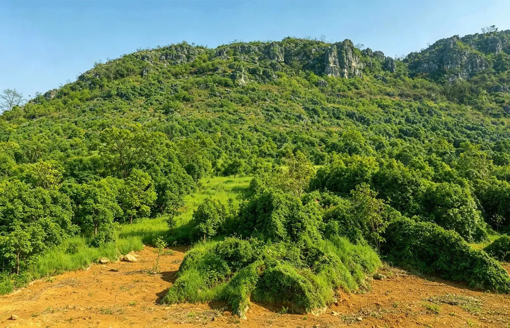
贵州四川5 地
以石漠化治理、林下经济和高原特色农业为主。
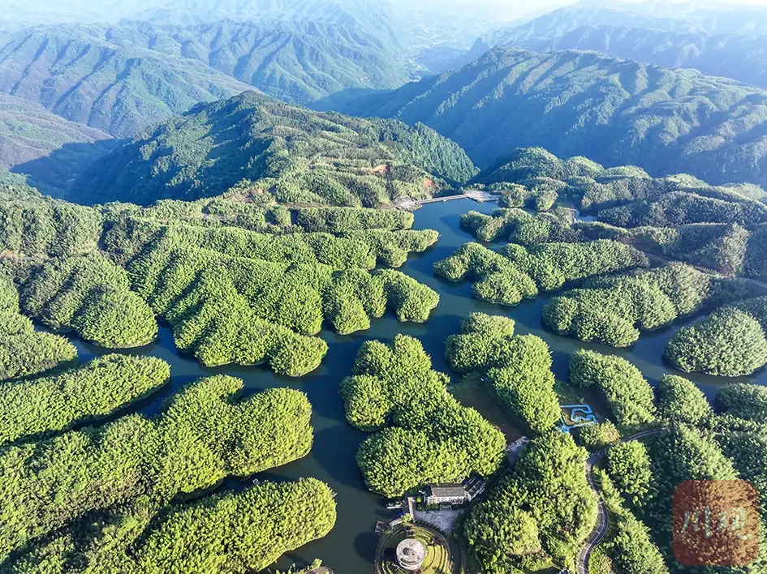
四川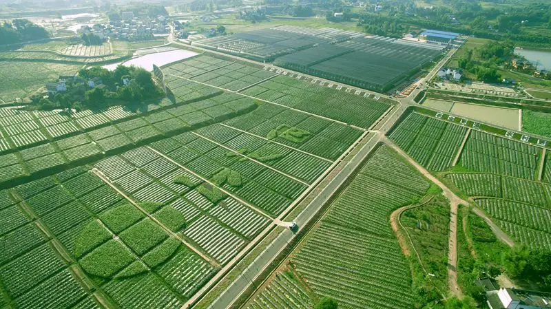
四川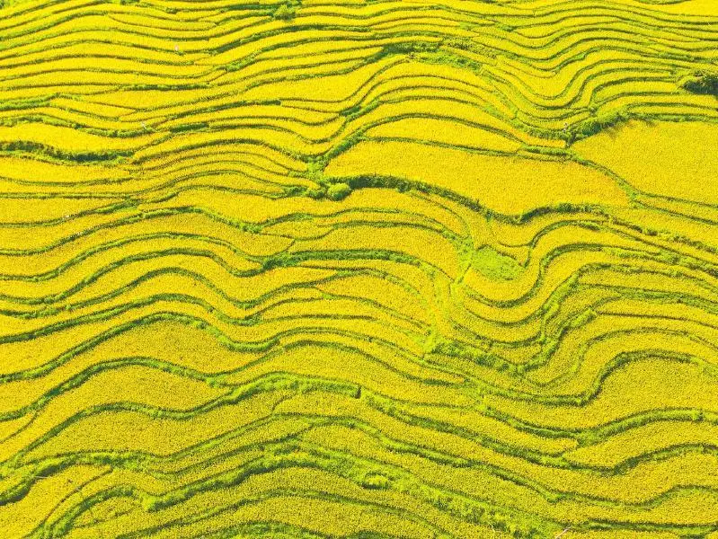
四川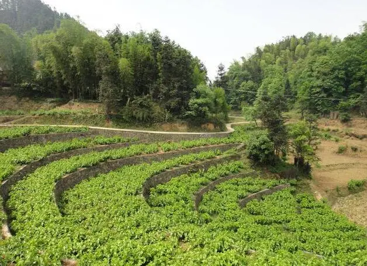
四川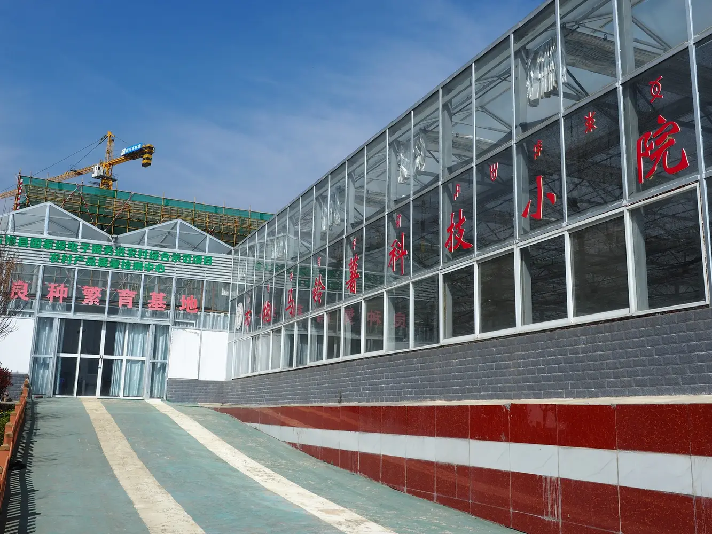
四川三省典型案例深度解读
云南 · 曲靖市罗平县
罗平：从油菜花海到近百亿元产业链
景观引流与农业加工共同延伸花经济
罗平把油菜生产、花海旅游、蜂产业和菜籽油加工连接起来，让一季花海延伸为覆盖种植、加工、消费和旅游的产业链。
85 万余亩油菜种植规模
近 100 亿元2024年花经济产值
花海景观与农业生产云南曲靖罗平
油菜种植形成季节性景观入口花海旅游继续连接蜂产业与菜籽油加工
贵州 · 毕节市赫章县海雀村
海雀：先让荒山稳定复绿，再让林海持续生金
三十多年持续造林和护林构成治理主线
海雀从1987年起持续植树造林，通过退耕还林和长期护林形成万亩林海，并进一步发展林下产业、乡村旅游和林业碳票。
77%森林覆盖率
1.37 万亩山林面积
万亩林海贵州赫章海雀村
持续造林与护林形成稳定生态本底林下产业和生态价值实现建立在长期修复基础上
相关文章：海雀的绿水青山：村民的幸福不动产
四川 · 宜宾市珙县
珙县：让石漠荒山进入种养循环
治理石漠化的同时消纳农业废弃物
珙县把畜禽粪污、桑枝秸秆资源化利用与蚕桑、茶叶等山地产业结合，以循环农业改善土壤条件并稳定农户收益。
13 万吨年处理畜禽粪污
5 万吨年利用桑枝秸秆
山地产业四川宜宾珙县
生态治理与蚕桑、茶叶产业协同推进种养循环减少废弃物并补充山地土壤有机质
相关文章：珙县：让石漠荒山变成农民致富“靠山”